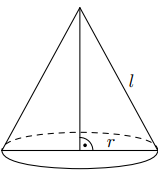
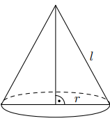

Walec, stożek, kula
Zad. 1
Tworząca stożka ma długość 6. Kąt rozwarcia tego stożka ma miarę 60°. Wysokość tego stożka jest równa
- Kąt rozwarcia stożka to kąt między tworzącymi. Jego połowa (\(30^\circ\)) jest kątem w trójkącie prostokątnym utworzonym z wysokości, promienia i tworzącej.
- Mamy \(\cos 30^\circ = \frac{h}{l} = \frac{h}{6}\).
- \(\cos 30^\circ = \tfrac{\sqrt{3}}{2}\), więc \(h = 6 \cdot \tfrac{\sqrt{3}}{2} = 3\sqrt{3}\).
- Odp.: C.
Zad. 2
Tworząca stożka jest o 2 dłuższa od promienia jego podstawy, a pole powierzchni bocznej jest o \(2\pi\) większe od pola podstawy.
Promień podstawy tego stożka jest równy
- Niech \(r\) – promień, \(l=r+2\).
- Pole boczne: \(P_b=\pi rl\). Pole podstawy: \(P_p=\pi r^2\).
- Dane: \(\pi rl = \pi r^2 + 2\pi \Rightarrow rl = r^2+2\).
- Podstawiamy \(l=r+2\): \(r(r+2)=r^2+2 \Rightarrow r^2+2r=r^2+2 \Rightarrow 2r=2\Rightarrow r=1\).
- Odp.: C.
Zad. 3
Dwa stożki o takich samych podstawach połączono podstawami (zobacz rysunek). Stosunek wysokości tych stożków jest równy 3:2.
Objętość stożka o krótszej wysokości jest równa 12 cm³.
Objętość bryły utworzonej z połączonych stożków jest równa
Objętość bryły utworzonej z połączonych stożków jest równa
- Objętość stożka \(V=\tfrac{1}{3}\pi r^2h\). Podstawy obu są takie same, więc stosunek objętości = stosunek wysokości.
- Dane: \(\tfrac{h_1}{h_2}=3:2\). Krótszy stożek (2 części) ma objętość 12.
- Skoro \(V_1:V_2=3:2\), a \(V_2=12\), to \(V_1=\tfrac{3}{2}\cdot 12=18\).
- Całość: \(V_1+V_2=18+12=30\).
- Odp.: B.
Zad. 4
Pole powierzchni całkowitej pewnego stożka jest 3 razy większe od pola powierzchni kuli. Promień tej kuli jest równy 2 i taki sam jak promień podstawy stożka.
Tworząca tego stożka ma długość równą
- Pole kuli: \(4\pi r^2=4\pi \cdot 2^2=16\pi\).
- Pole stożka: \(P=\pi r l+\pi r^2=\pi \cdot 2l+4\pi=2\pi l+4\pi\).
- Warunek: \(2\pi l+4\pi=3\cdot 16\pi=48\pi\).
- \(2\pi l=44\pi\Rightarrow l=22\).
- Odp.: D.
Zad. 5
Przekrojem osiowym walca jest kwadrat o przekątnej długości 12. Objętość tego walca jest zatem równa
- Przekrój osiowy walca to prostokąt \(2r\times h\). Jest kwadratem, więc \(2r=h=s\).
- Z przekątnej: \(s\sqrt{2}=12\Rightarrow s=6\sqrt{2}\). Zatem \(r=\tfrac{s}{2}=3\sqrt{2}\), \(h=s=6\sqrt{2}\).
- \(V=\pi r^2h=\pi\cdot(18)\cdot 6\sqrt{2}=108\pi\sqrt{2}\).
- Odp.: B.
Zad. 6
Promień kuli i promień podstawy stożka są równe 4. Pole powierzchni kuli jest równe polu powierzchni całkowitej stożka. Długość tworzącej stożka jest równa
- \(P_{\text{kuli}}=4\pi r^2=4\pi\cdot 4^2=64\pi\).
- \(P_{\text{stożka}}=\pi rl+\pi r^2=\pi\cdot 4l+16\pi\stackrel{!}{=}64\pi\Rightarrow4\pi l=48\pi\).
- \(l=12\).
- Odp.: D.
Zad. 7
Przekrój osiowy walca jest kwadratem o przekątnej \(10\sqrt{2}\). Pole powierzchni bocznej tego walca jest równe
- Niech bok kwadratu \(s\). \(s\sqrt{2}=10\sqrt{2}\Rightarrow s=10\).
- \(2r=h=s=10\Rightarrow r=5,\ h=10\).
- \(P_b=2\pi r h=2\pi\cdot 5\cdot 10=100\pi\).
- Odp.: B.
Zad. 8
Dany jest walec, w którym wysokość jest równa promieniowi podstawy. Objętość tego walca jest równa \(27\pi\). Wynika stąd, że promień podstawy tego walca jest równy
- \(h=r\Rightarrow V=\pi r^2h=\pi r^3=27\pi\).
- \(r^3=27\Rightarrow r=3\).
- Odp.: C.
Zad. 9
Stożek o promieniu podstawy \(r\) i kula o tym samym promieniu mają równe objętości. Tangens kąta między tworzącą i płaszczyzną podstawy tego stożka jest równy
- \(V_{\text{stoż}}=\tfrac{1}{3}\pi r^2h\), \(V_{\text{kuli}}=\tfrac{4}{3}\pi r^3\). Równość objętości daje \(h=4r\).
- W trójkącie przekroju: \(\tan\varphi=\dfrac{h}{r}=\dfrac{4r}{r}=4\), gdzie \(\varphi\) – kąt między tworzącą a płaszczyzną podstawy.
- Odp.: D.
Zad. 10
Na rysunku przedstawiono bryłę zbudowaną z walca i półkuli. Wysokość walca jest równa \(r\) i jest taka sama jak promień półkuli oraz taka sama jak promień podstawy walca.
Objętość tej bryły jest równa
Objętość tej bryły jest równa
- Walec: \(V_w=\pi r^2h=\pi r^3\) (bo \(h=r\)).
- Półkula: \(V_{1/2\,k}=\tfrac{1}{2}\cdot \tfrac{4}{3}\pi r^3=\tfrac{2}{3}\pi r^3\).
- Razem: \(V=\pi r^3+\tfrac{2}{3}\pi r^3=\tfrac{5}{3}\pi r^3\).
- Odp.: A.
Zad. 11
Dany jest stożek o wysokości 6 i tworzącej \(3\sqrt{5}\). Objętość tego stożka jest równa
- \(l^2=r^2+h^2\Rightarrow (3\sqrt{5})^2=r^2+6^2\Rightarrow 45=r^2+36\Rightarrow r^2=9\Rightarrow r=3\).
- \(V=\tfrac{1}{3}\pi r^2h=\tfrac{1}{3}\pi\cdot 9\cdot 6=18\pi\).
- Odp.: B.
Zad. 12
Pole powierzchni bocznej walca jest równe \(16\pi\), a promień jego podstawy ma długość 2. Wysokość tego walca jest równa
- \(P_b=2\pi r h=16\pi\) i \(r=2\Rightarrow 4\pi h=16\pi\).
- \(h=4\).
- Odp.: A.
Zad. 13
Kąt rozwarcia stożka ma miarę \(120^\circ\), a tworząca tego stożka ma długość 6. Promień podstawy stożka jest równy
- Połowa kąta rozwarcia: \(\alpha=60^\circ\).
- W trójkącie przekroju: \(r=l\sin\alpha=6\cdot \sin 60^\circ=6\cdot \tfrac{\sqrt{3}}{2}=3\sqrt{3}\).
- Odp.: C.
Zad. 14
Dany jest walec, w którym promień podstawy jest równy \(r\), a wysokość walca jest od tego promienia dwa razy większa. Objętość tego walca jest równa
- \(h=2r\). Objętość: \(V=\pi r^2h=\pi r^2\cdot 2r=2\pi r^3\).
- Odp.: A.
Zad. 15
Kąt rozwarcia stożka ma miarę \(120^\circ\), a tworząca tego stożka ma długość 4. Objętość tego stożka jest równa
- Połowa kąta rozwarcia: \(\alpha=\tfrac{120^\circ}{2}=60^\circ\).
- \(r=l\sin\alpha=4\cdot \tfrac{\sqrt{3}}{2}=2\sqrt{3}\), \(h=l\cos\alpha=4\cdot \tfrac{1}{2}=2\).
- \(V=\tfrac{1}{3}\pi r^2 h=\tfrac{1}{3}\pi\cdot (2\sqrt{3})^2\cdot 2=\tfrac{1}{3}\pi\cdot 12\cdot 2=8\pi\).
- Odp.: D.
Zad. 16
Dany jest trójkąt prostokątny o długościach boków \(a,b,c\), gdzie \(a<b<c\). Obracając ten trójkąt wokół dłuższej przyprostokątnej, otrzymujemy bryłę, której objętość jest równa
- Oś obrotu: dłuższa przyprostokątna \(b\) → wysokość stożka \(h=b\), promień podstawy \(r=a\).
- \(V=\tfrac{1}{3}\pi r^{2}h=\tfrac{1}{3}\pi a^{2} b\).
- Odp.: A.
Zad. 17
Przekątna przekroju osiowego walca, którego \(r=4\) i \(h=6\), ma długość
- Przekrój osiowy: prostokąt \(2r\times h=8\times 6\).
- Przekątna: \(d=\sqrt{(2r)^2+h^2}=\sqrt{8^2+6^2}=\sqrt{64+36}=10\).
- Odp.: D.
Zad. 18
Tworząca stożka o promieniu podstawy 3 ma długość 6 (zobacz rysunek).
Kąt \(\alpha\) rozwarcia tego stożka jest równy
Kąt \(\alpha\) rozwarcia tego stożka jest równy
- \(\sin\frac{\alpha}{2}=\dfrac{r}{l}=\dfrac{3}{6}=\tfrac{1}{2}\Rightarrow \frac{\alpha}{2}=30^\circ\).
- \(\alpha=60^\circ\).
- Odp.: C.
Zad. 19
Przekrojem osiowym stożka jest trójkąt równoboczny o boku długości 6. Objętość tego stożka jest równa
- W przekroju: boki równe to tworzące, więc \(l=6\), a podstawa to \(2r=6\Rightarrow r=3\).
- Wysokość trójkąta równobocznego: \(h= \tfrac{\sqrt{3}}{2}\cdot 6=3\sqrt{3}\) (to wysokość stożka).
- \(V=\tfrac{1}{3}\pi r^2 h=\tfrac{1}{3}\pi\cdot 9\cdot 3\sqrt{3}=9\pi\sqrt{3}\).
- Odp.: B.
Zad. 20
Pole powierzchni całkowitej walca, którego przekrojem osiowym jest kwadrat o boku długości 4, jest równe

- Kwadrat \(s=4\Rightarrow 2r=h=4\). Zatem \(r=2,\ h=4\).
- \(P_b=2\pi r h=2\pi\cdot 2\cdot 4=16\pi\), sumy podstaw: \(2\pi r^2=2\pi\cdot 4=8\pi\).
- \(P_c=16\pi+8\pi=24\pi\).
- Odp.: D.
Zad. 21
Objętość walca o promieniu podstawy 4 jest równa \(96\pi\). Pole powierzchni bocznej tego walca jest równe
- \(V=\pi r^2 h=96\pi\), \(r=4\Rightarrow 16\pi h=96\pi\Rightarrow h=6\).
- \(P_b=2\pi r h=2\pi\cdot 4\cdot 6=48\pi\).
- Odp.: D.
Zad. 22
Stożek i walec mają takie same podstawy i równe pola powierzchni bocznej. Wtedy tworząca stożka jest
- Dla tej samej podstawy \(r\): \(P_b(\text{stoż})=\pi r l\), \(P_b(\text{wal})=2\pi r h\).
- Równość: \(\pi r l=2\pi r h\Rightarrow l=2h\).
- Odp.: B.
Zad. 23
Tworząca stożka ma długość \(l\), a promień jego podstawy jest równy \(r\) (zobacz rysunek).

Powierzchnia boczna tego stożka jest 2 razy większa od pola jego podstawy. Wówczas

Powierzchnia boczna tego stożka jest 2 razy większa od pola jego podstawy. Wówczas
- \(P_b=\pi r l\), \(P_{pod}=\pi r^2\), warunek: \(\pi r l=2\pi r^2\).
- Dzielimy przez \(\pi r\,(r>0)\): \(l=2r\Rightarrow r=\tfrac{1}{2}l\).
- Odp.: D.
Zad. 24
Objętość walca o wysokości \(8\) jest równa \(72\pi\). Promień podstawy tego walca jest równy
- \(V=\pi r^2 h=72\pi\), dla \(h=8\) mamy \(\pi r^2\cdot 8=72\pi\Rightarrow r^2=9\).
- \(r=3\) (promień dodatni).
- Odp.: D.
Zad. 25
Objętość stożka o wysokości \(h\) i promieniu podstawy trzy razy mniejszym od wysokości jest równa
- \(r=\tfrac{h}{3}\).
- \(V=\tfrac{1}{3}\pi r^2 h=\tfrac{1}{3}\pi\left(\tfrac{h}{3}\right)^2 h=\tfrac{1}{27}\pi h^3\).
- Odp.: D.
Zad. 26
Pole powierzchni bocznej stożka o wysokości \(4\) i promieniu podstawy \(3\) jest równe
- Tworząca: \(l=\sqrt{r^2+h^2}=\sqrt{3^2+4^2}=5\).
- \(P_b=\pi r l=\pi\cdot 3\cdot 5=15\pi\).
- Odp.: C.
Zad. 27
Stożek powstał w wyniku obrotu trójkąta prostokątnego o przyprostokątnych \(13\) i \(15\) wokół dłuższej przyprostokątnej. Promień podstawy tego stożka jest równy
- Oś obrotu: dłuższa przyprostokątna \(15\) ⇒ promień to druga przyprostokątna.
- \(r=13\).
- Odp.: B.
Zad. 28
Przekrój osiowy walca jest kwadratem o boku długości \(6\). Objętość tego walca jest równa
- Kwadrat jako przekrój osiowy ⇒ \(2r=h=6\Rightarrow r=3,\ h=6\).
- \(V=\pi r^2 h=\pi\cdot 9\cdot 6=54\pi\).
- Odp.: B.
Zad. 29
Kula ma objętość \(V=288\pi\). Promień \(r\) tej kuli jest równy
- \(\tfrac{4}{3}\pi r^3=288\pi\Rightarrow r^3=288\cdot \tfrac{3}{4}=216\).
- \(r=\sqrt[3]{216}=6\).
- Odp.: A.
Zad. 30
Objętość stożka o wysokości \(8\) i średnicy podstawy \(12\) jest równa
- Promień \(r=6\), wysokość \(h=8\).
- \(V=\tfrac{1}{3}\pi r^2 h=\tfrac{1}{3}\pi\cdot 36\cdot 8=96\pi\).
- Odp.: B.
Zad. 31
Powierzchnia boczna stożka po rozwinięciu jest półkolem o promieniu \(12\) cm. Podstawa tego stożka jest kołem o promieniu
- Promień rozwinięcia = tworząca \(l=12\).
- Długość łuku półkola \(=\pi l\) równa się obwodowi podstawy \(2\pi r\): \(\pi\cdot 12=2\pi r\Rightarrow r=6\).
- Odp.: B.
Zad. 32
Przekrój osiowy stożka jest trójkątem równobocznym o boku długości \(6\). Pole powierzchni bocznej tego stożka jest równe
- W przekroju: boki równe to tworzące, a podstawa przekroju to \(2r\).
- Skoro trójkąt równoboczny ma bok \(6\): \(2r=6\Rightarrow r=3\) oraz \(l=6\).
- \(P_b=\pi r l=\pi\cdot 3\cdot 6=18\pi\).
- Odp.: B.